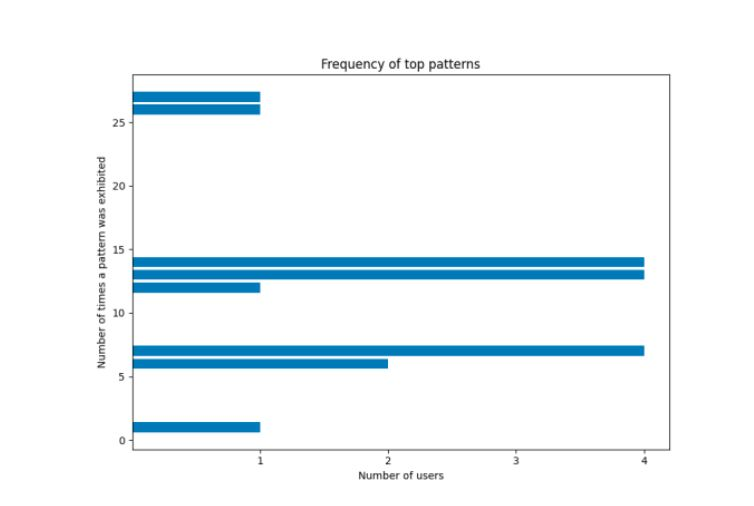

Dashboards are everywhere — in healthcare, finance, operations, HR — but most organisations have no reliable way to know whether their dashboards are actually usable until users complain. Traditional usability testing is expensive, intrusive, and can't scale. Could passive interaction data — mouse movements, hovers, scrolls, clicks — be used to predict usability automatically?
The study performed a secondary analysis on empirical data from 63 participants interacting with 8 dashboards — four with known usability problems, four with those problems corrected. This produced over 1.2 million low-level interaction events captured unobtrusively via a monitoring tool.
The core innovation was a two-pipeline KDD (Knowledge Discovery in Databases) approach: the first extracted sequential interaction patterns using the VMSP algorithm; the second tested whether pattern frequency could predict 9 usability factors — including task efficiency, cognitive load, and user effectiveness.
Pre-processing reduced 1,114,761 raw events to 16,907 meaningful interaction pairs by merging atomic events (mousedown + mouseup = click), broadening UI element categories, and removing training noise. The VMSP maximal sequential pattern mining algorithm was then applied, identifying 7 dominant patterns across 16 dashboard tasks.
The 7 most common patterns fell into three behavioural themes: inspection (hovering to examine elements), exploration (hovering and scrolling to navigate), and analysis (hovering, scrolling, and clicking to interrogate specific sections). These themes were consistent across different dashboards and tasks — suggesting generic user behaviour independent of dashboard content.
On usability prediction, Support Vector Regression was used to test whether pattern frequency could predict nine usability variables. Objective factors — task efficiency, effectiveness, and graph literacy — showed the lowest Mean Squared Error values, meaning the model was most predictive for these measurable outcomes. Subjective self-reported factors (cognitive load, frustration) were harder to predict from interaction data alone.
A key practical finding: users who showed more interaction patterns (more exploration behaviour) were consistently less effective at answering dashboard tasks — even across different dashboards. This validated interaction patterns as a reliable signal of usability problems, not just individual user difficulty.
If you have a dashboard, portal, or analytics tool that users interact with, you likely have interaction logs sitting unused. This research shows that those logs are a direct window into where your users are struggling — without needing surveys, interviews, or usability labs.
The methodology is applicable to any product team, BI team, or analytics function that wants to move from anecdotal usability feedback to evidence-based design decisions. It's also directly relevant to any organisation evaluating third-party dashboards or data tools for procurement.